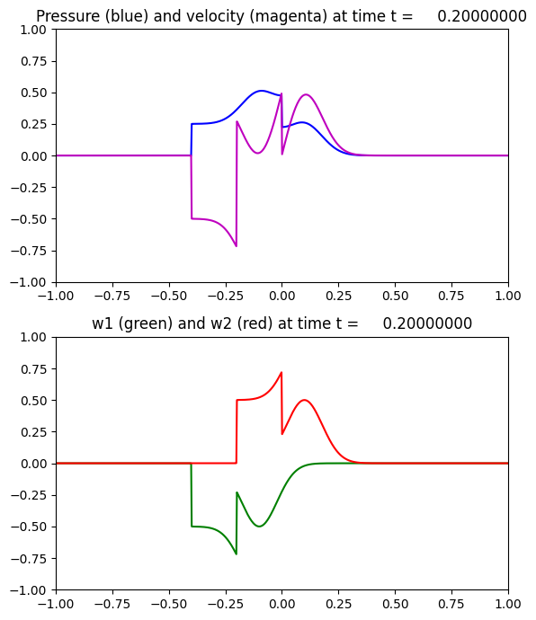

Image source: /Users/rjl/clawpack_src/clawpack_master/apps/fvmbook/chap3/acousimple/_plots/frame0001fig2.png
Other figures at this time: Pressure and Velocity characteristic variables All Figures
Other frames: 0 1 2 3 4 5 6 7 8 9 10 11 12 13 14 15 All Frames